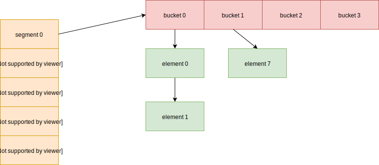

结构图
hash 表包含了多个 segment 切片，每个 segment 包含了相同数量的 bucket。里面的 bucket 使用链表存储着 hash 值相同的元素。
当查找指定的 key 时，首先计算出它的哈希值，然后根据后面的几位数，计算出对应的 bucket 位置。之后遍历 bucket 的元素链表，查看是否有 key 元素。
当增加元素时，同样先找到对应 bucket 位置，然后查看是否存在对应的链表中。如果不存在，直接添加到尾部。如果存在则可以覆盖或者报错。
当删除元素时，同样先找到对应 bucket 位置，然后查看是否存在对应的链表中。如果存在，则只需要将其从链表中删除即可。
扩容原理
postgresql 只会在负载率过高的情况下，发生扩容操作。并且它的一次扩容只会增加一个 bucket。我们来举个例子，查看下它的扩容过程。我们先初始化只有2个 bucket 的哈希表，

计算 key 对应的 bucket 位置，需要涉及到 hign_mask 和 low_mask。下面程序实现了
|
|
当发生扩容时，会计算新增bucket的元素和原先哪个bucket有关系，需要将旧有的bucket数据重新分开。并且还会更新相关属性
|
|
postgresql 实现
初始化
|
|
空闲列表
postgresql 增加了空闲列表，当删除元素时，并不会将其内存回收，而是添加到空闲列表里，这样后面添加数据时，就直接从里面取，加快了每次申请内存的速度。
postgresql 在下面两种情况下，会提前进行预分配空间，存储在空闲链表里。
- 当在创建 hash 表时，如果该hash 表是存储在共享内存中，为了避免并发时等待申请内存，postgresql 会提前分配好数据，存储在空闲列表里。
- 如果指定的指定的数目小于计算出来的大小（一般为2的幂数），postgresql 会倾向于指定的数目，这是用户传递的参数，应该更加准确。所以它也会提前分配出对应的空间。
对于分区的哈希表，会有 32 个空闲列表，这样细化了锁的粒度。它在 postgresql 的表示
|
|
当操作列表时，是需要先获取到它的锁。需要注意下nentries，它并不是表示该空闲列表的长度，不然读者在阅读源码时会容易造成误解。
插入元素
当插入元素时，会先去空闲链表申请。如果空闲列表没有，就会取内存申请空间。
对于分区的哈希表，我们直到会有多个空闲列表。当指定的列表没有元素时，它会从其它列表借元素过来。为了避免频繁的借，因为这样需要涉及到两个列表的加锁操作，而且一个列表的空闲元素不足，说明该链表对应的数据往往更加多，所以 postgresql 一次借操作，就是一个批量的元素。
删除元素
当删除元素后，会将元素回收到对应的空闲列表中。
分区并发
当 hash表 存储在共享内存里，被多个进程同时访问，才会允许被分区。每个分区拥有一个锁，称为分区锁，是为了保护 bucket 里的元素链表并发操作的正确性。buckt 的数目 必须是等于分区数目，或者是乘以 2 的幂数。这样一个分区会对应一个或者多个 bucket，保护它们。
还有对于分区的哈希表，空闲列表的数目是 32。如果没有分区，那么数目为1。
这里需要额外说下分区数目和 segment 数目的关系。分区数目是在创建哈希表的时候确定的，之后是不能改变的。segment 数目是随着哈希表的扩容，有可能增长的。分区只是用来保护 bucket 并发的，而 segment 只是将 bucket 按照一定数目分开。
还有对于分区的哈希表，postgresql 是不支持扩容的。
使用方法
哈希值计算
postgresql 支持多种哈希算法：
- 用户自定义
- 支持二进制数据的哈希：如果 key 是 4字节的，那么就 uint32_hash 算法，否则选择 tag_hash 算法。
- 其余情况为 string_hash
key值比较
key 值比较方式：
- 用户自定义
- 如果哈希算法是 string_hash，那么 string_compare
- 其余情况为比较字节 memcmp
创建哈希表
|
|
参数HASHCTL指定了哈希表的配置信息，这里显示一些常见配置
|
|
参数flags指定了使用传递过来的哪些配置信息，下面也列出常用的选项
|
|
操作方法
|
|
hash_search函数负责查找，插入和删除操作。HASHACTION指定了操作类型
|
|
如果为查找操作，那么返回找到对应的 value。如果没有找到，则返回 NULL。
如果为删除操作，那么会返回删除的value。如果不存在，则返回NULL。
如果为插入操作，并且对应的value已经存在，那么返回已经存在的。否则返回新的数据项地址。用户获得地址后，填充数据。
数据结构体
HASHELEMENT 结构体表示元素，后面会跟着一个 对应的 key 和一个 value。这两者是通过结构体来关联的
|
|
总结
postgresql 在设计扩容时是很精妙的，只是使用了 high_mask 和 low_mask 两个数字进行 & 操作，就可以快速的找到对应的 bucket。
还有设计了空闲列表，针对并发环境，还设置了多个空闲列表，增大并发性能。同样引入分区锁，来细化锁粒度，这些都是值得学习的知识点。